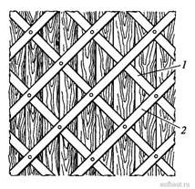
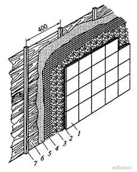

-

8(0152)31-25-61
-

kst@ggkst.by
-

http://ggkst.by
8(0152)31-25-61
kst@ggkst.by
http://ggkst.by
Подготовка деревянных поверхностей
Подготовить деревянную поверхность значительно сложнее, так как древесина под воздействием влаги разбухает, а при высыхании коробится и растрескивается. В настоящее время деревянные поверхности встречаются редко. Целесообразнее при их отделке применять метод облицовки стен гипсокартонными листами на деревянных брусках или металлических профилях. Этот метод исключает технологическое увлажнение строительных конструкций и обязательную последующую их просушку, снижает трудоемкость подготовки деревянный поверхностей, обеспечивает высокое качество последующей отделки.
Значительно труднее и не с таким высоким качеством можно подготовить деревянную поверхность под штукатурку, набив на нее дрань, а под облицовку - при помощи металлической сетки.
Штукатурка и деревянная поверхность имеют самые худшие показатели по прочности при соединении. Для того чтобы укрепить эти соединения, на деревянные поверхности для создания шероховатости набивают дрань (рис. 3). Чтобы поверхности не коробились, доски предварительно надкалывают и в надколы забивают клинья. Чтобы уменьшить теплопроводность и звукопроводность деревянных поверхностей, на них до набивки драни набивают рогожу, мешковину или войлок. Эти материалы пропитывают антисептиком.

Рисунок 3. Набитая дрань
1 - простильная; 2 - выходная
Ширина драни составляет 20...30 мм, толщина - 4...5 мм, длина - 1000... 2500 мм. В драни не должно быть гнили, плесени, коротких драниц.
Прибивать дрань начинают с низа стен. Сначала прибивают ряды простильной (1) драни (нижние ряды, прибитые непосредственно к деревянной поверхности). Ряды драни прибивают под углом 45° к полу. Затем прибивают ряды выходной 2 драни (верхние ряды драни, прибитые на простильные). Ряды простильной и выходной драни располагаются под углом 90° друг к другу и на расстоянии примерно 45 мм друг от друга.
При подготовке деревянных поверхностей под облицовку между деревом и облицовкой создают воздушную прослойку, которая предохраняет облицовку от влияния на нее объемных изменений дерева (рис. 4).

Рисунок 4. Облицовка деревянных поверхностей
1 - плитка; 2 - растворная прослойка; 3 - раствор; 4 - металлическая сетка; 5 - гидроизоляционный материал; 6 - деревянные доски; 7 - деревянный брусок
Для создания воздушной прослойки на деревянные поверхности набивают вертикальные бруски сечением 20x30 или 25x40 мм, расположенные на расстоянии примерно 40 см друг от друга. Затем поверхность и бруски покрывают антисептирующим составом, предохраняющим дерево от гниения. На брусках закрепляют гидроизоляционный материал (толь или рубероид), по которому к брускам гвоздями крепят металлическую сетку с ячейками размером 10... 15 мм.
Сетку натягивают туго, чтобы при дальнейшем обмазывании ее раствором она не провисала. На сетку наносят жесткий цементный раствор с добавлением волокнистых веществ. Раствор намазывают на металлическую сетку снизу вверх кельмой.
Требования к поверхностям, подлежащим облицовке плиткой